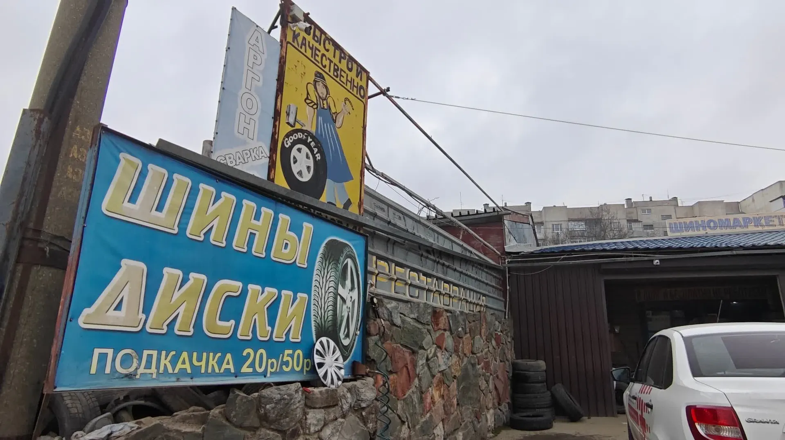
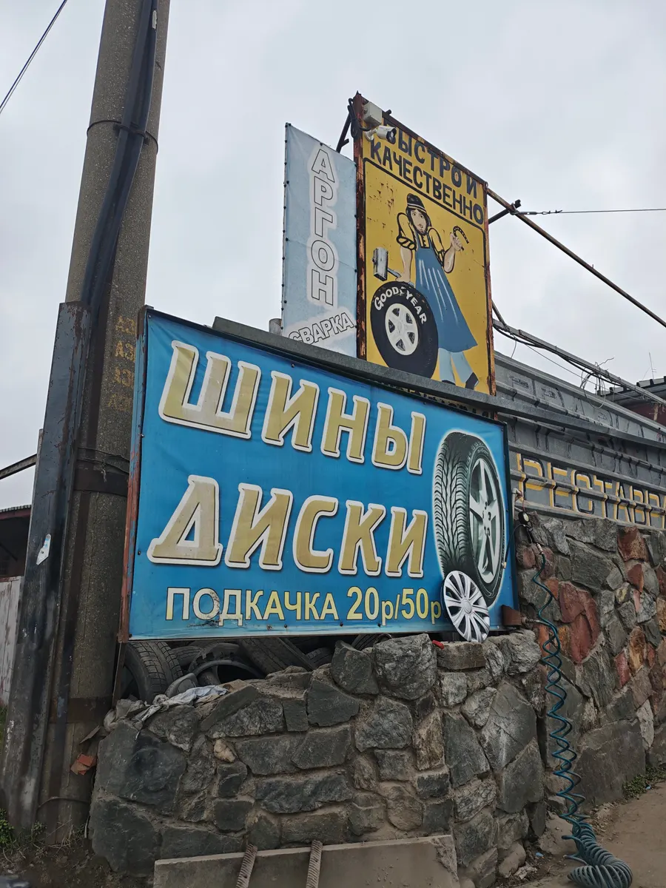
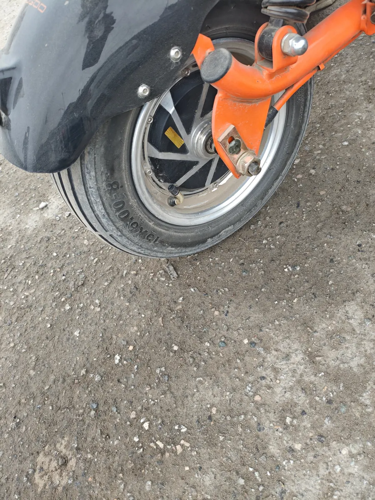

Шиномонтаж · Прохладный
Шины, диски и шиномонтаж в Прохладном
Шиномонтаж, шины и диски в одном месте. Подкачка колёс по цене с вывески. Телефон: уточнить.
- Ежедневно с 08:00 до 17:00
- Рейтинг 4,7 на Яндекс Картах, 60 оценок
- Магазин дисков и шин при шиномонтаже

Чем занимаются
Входит
- Шиномонтаж
- Ремонт шины
- Шины и диски
Отдельно, если нужно
- Подкачка колёс
- Магазин дисков и шин
- Телефон: уточнить
Цены на работы
На карточке цены не указаны: уточнить.
Услуги
- Шиномонтаж (переобувка)уточнить
- Ремонт шиныуточнить
- Шины и дискиуточнить
- Подкачка колёсуточнить
Данные взяты с карточки на Яндекс Картах.
Как это проходит
- 01
Связь
Телефон на карточке не указан: уточнить.
- 02
Приезжаете
Ежедневно 08:00–17:00, Пролетарская ул..
- 03
Делаем работу
Точная цена и сроки: уточнить.


Что говорят клиенты
Опытные мастера
«Стаж работы у них более 20 лет» - из отзыва.
Умеренные цены
Так пишут клиенты в отзывах.
Шины и диски рядом
«Там же и магазин автомобильных дисков и шин» - из отзыва.
Отзывы с Яндекс.Карт
«Ребята опытные, (стаж работы у них более 20 лет) Работают быстро и качественно, там же и магазин автомобильных дисков и шин. Цена на услуги и товар умеренная, один из лучших шиномонтажей в городе.»
Юрий Кубалов · 4 мая 2023
«Ребята делают качественно и недорого. Ценой шиномонтажа был сильно удивлён.»
Дмитрий Федоров · 26 июля 2024
«Починили шину очень хорошо быстро цена приемлемая оперативно отличный сервис»
сулик лю · 5 июня 2026
Отзывы с карточки на Яндекс.Картах, без правок.
Частые вопросы
Когда вы работаете?
Ежедневно 08:00–17:00.
Сколько стоит?
Цены на карточке не указаны: уточнить.
Где вы находитесь?
Прохладный, Пролетарская ул..
Приезжайте или звоните
- Адрес
- Пролетарская ул., Прохладном
- Часы
- Ежедневно 08:00–17:00
- Телефон
- уточнить